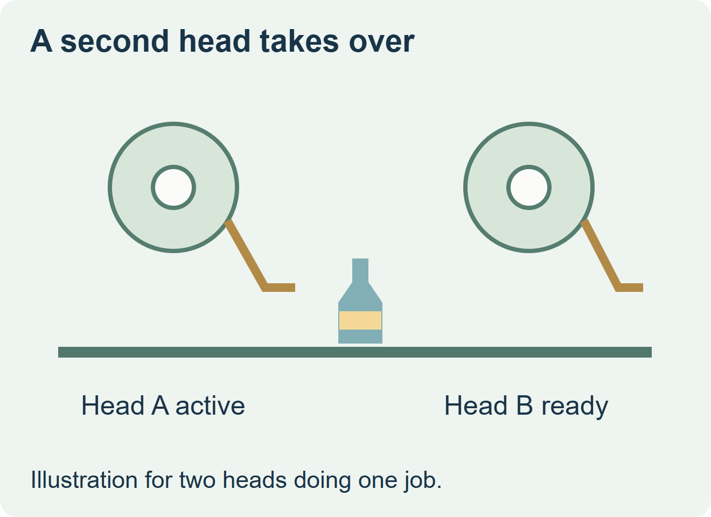
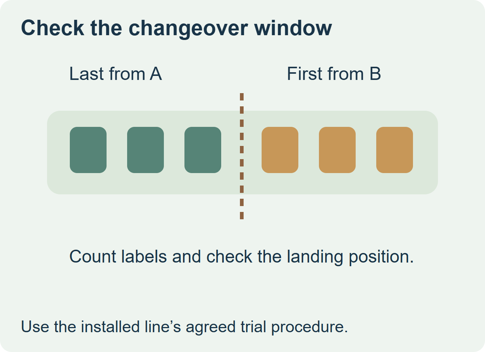

Buy one roll item for both heads only after each head accepts that roll and the transfer produces an acceptable pack. If the heads require different unwind, label orientation, sensing or roll geometry, quote separate roll items or ask the equipment team to approve a common setup. An active and standby pair for one body label is a different arrangement from two heads applying a front and a back label.


Ask what happens when the active roll ends
With redundant heads, the standby applicator takes over the label job. HERMA describes that arrangement for a configured pair of HERMA 500 applicators. On a single web path with automatic splicing, the replacement web is joined to the working path; Krones lists splicing and automatic change as configuration options on Autocol. Confirm the exact installed equipment and ask which transition the trial should reproduce. HERMA 500 redundancy and Krones Autocol options
Build a brief for both stations
| Check | Record for head A and head B | Order decision |
|---|---|---|
| Mount and feed | Core, outer diameter, web width, winding, unwind drawing and label pitch | Use one roll item when both setups approve the same drawing. |
| Detect and apply | Liner and sensing method, label leading edge, and finished print orientation | Make a separate drawing if either head needs a different presentation. |
| Transfer | End trigger, usable tail, standby setup and packs around the takeover | Hold the common-roll release until both normal running and transfer have been checked. |


Inspect the packs at the handover
Use the line team’s supported procedure to observe a transfer at an agreed speed with representative rolls and bottles. Identify the last pack handled by the active head and the first handled by standby. Inspect the transition window for missing or duplicate labels, orientation and landing position. Confirm any required reject handling with the line team. If both heads will take over during routine use, include both directions in the plan.
A smaller roll can help with clearance, but the change may also increase transfer frequency. Compare quotes on usable labels per roll, set-up losses and confirmed consumption at each head. If two item codes are necessary, mark head, orientation and version on the roll identification so the wrong roll cannot be selected by appearance alone.
Discuss the unresolved label requirement
Send the two head or station IDs, their roll drawings, photos of threaded webs with text orientation visible, the label construction and quantity, and the OEM’s changeover method. Note any unresolved end-of-roll or first-off observation. Review beverage label options and prepare a label specification inquiry. The contact page opens an email draft and lists email or WhatsApp for attachments. Supply, proof options, testing, pricing and timing require project confirmation.